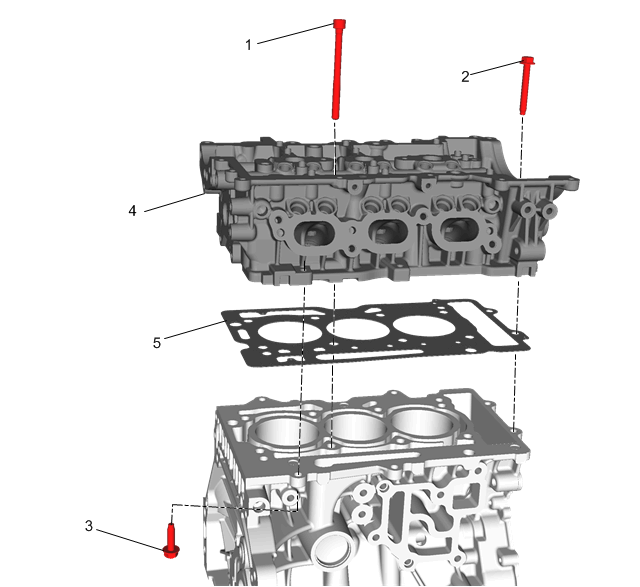
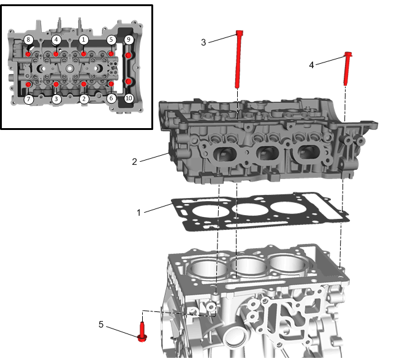

气缸盖的更换
专用工具
•
EN-38188
气缸盖断裂螺栓拔取工具套件
—或相应的售后工具
•
EN 45059
角度测量仪
关于当地同等工具，参见
专用工具
。
拆卸程序
1.
排空发动机机油。
发动机机油和机油滤清器的更换
2.
排放冷却液。
冷却系统的排放和加注
3.
进气凸轮轴的更换
、
排气凸轮轴的更换
»拆卸
4.
发电机的更换
»拆卸
5.
涡轮增压器的更换
»拆卸
6.
机油尺和套管的更换
»拆卸
7.
出水口的更换
»拆卸
8.
发动机机油压力传感器的更换
»拆卸
9.
进气歧管的更换
»拆卸
10.
在发动机下方放置一个发动机支撑台以支撑发动机。
11.
发动机支座托架的更换
»拆卸

注意:
使用
EN-38188
气缸盖断裂螺栓拔取工具套件
拆下任何断裂的螺栓。
12.
拆下并报废气缸盖螺栓。（1）[8x]
13.
拆下2颗气缸盖螺栓（2）和四颗气缸盖固定螺栓（3）。
告诫：
在气缸盖的拆卸过程中，为了防止损坏气门和喷油器，将气缸盖放置在气缸体上。
14.
拆下气缸盖。（4）
15.
拆下并报废气缸盖衬垫。（5）
注意:
应该用尼龙毛刷清洁螺栓孔。切勿使用丝锥清理气缸盖螺栓孔。
16.
清除螺栓孔中的旧密封胶/润滑油和污物。
17.
使用
EN-38188
套件
拆下任何断裂的气缸盖螺栓。
18.
如果更换气缸盖，则视情况移装其他部件。
19.
如果不更换气缸盖，则清洁并检查气缸盖。参见
气缸盖的清洁与检查
警告：
在使用压缩空气或任何清洗溶剂时，佩戴安全眼镜以避免伤害。如果吸入烟气或皮肤接触化学品，可能导致人身伤害。
注意:
•
清洁发动机气缸体气缸盖螺栓孔时，使用适当的商业喷液溶剂和长嘴喷枪喷出的压缩空气，以达到孔的底部。
•
使用衬垫刮刀清洁气缸盖和气缸体表面。
•
注意不要擦伤或划伤衬垫表面。不要碰伤或划伤燃烧室表面。衬垫表面的感觉很重要，而非外观。在除去所有衬垫材料后，气缸盖中会留下衬垫的压痕。这些小压痕将被新的衬垫填满。
•
切勿使用丝锥清理气缸盖螺栓孔
20.
清洁发动机气缸体上的配合面。
21.
关于气缸盖的拆解，请参见
气缸盖的拆解
。
安装程序
1.
关于气缸盖的装配，请参见
气缸盖的装配
。

注意:
确保气缸盖和气缸体的密封面上无机油、润滑脂和旧衬垫材料。
2.
安装新的气缸盖衬垫。（1）
3.
安装气缸盖。（2）
4.
安装新的气缸盖螺栓，并用手拧紧。（3）
告诫：
参见
有关屈服力矩型紧固件的告诫
。
告诫：
参见
有关紧固件的告诫
。
5.
按图示顺序紧固新螺栓。
5.1
第一遍将螺栓紧固至
30牛米（22英尺磅力）
。
5.2
最后一遍使用
EN 45059
角度测量仪
将螺栓紧固
210度
。
6.
安装并紧固气缸盖螺栓（4）[2x]至
25牛米（18英尺磅力）
7.
安装并紧固气缸盖固定螺栓（5）[4x]至
25牛米（18英尺磅力）
8.
进气歧管的更换
»安装
9.
发动机支座托架的更换
»安装
10.
移除发动机下方的发动机支撑台
11.
发动机机油压力传感器的更换
»安装
12.
出水口的更换
»安装
13.
机油尺和套管的更换
安装
14.
涡轮增压器的更换
»安装
15.
发电机的更换
»安装
16.
进气凸轮轴的更换
、
排气凸轮轴的更换
»安装
17.
加注发动机机油，并更换机油滤清器。参见
发动机机油和机油滤清器的更换
。
18.
加注冷却液系统。参见
冷却系统的排放和加注
。